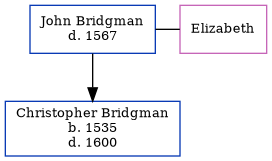

John Bridgman - 1567
[ Home ] | [ Calendar ] | [ Surnames Index ] | [ Census Index ] | [ Family History ]John Bridgman was the 11 times great-grandfather of Nigel Horne and had 1 child with Elizabeth: Christopher.
He died in 1567 in Waltham, Kent, England1 and was buried in Kent on Feb 8, 1567.
Children
- Christopher was born in 1535
Citations
- Kent, England, Tyler Index to Parish Registers, 1538-1874 Online publication - Provo, UT, USA: Ancestry.com Operations, Inc., 2010. This collection was indexed by Ancestry World Archives Project contributors.Original data - Frank Watt Tyler. The Tyler Collection. Canterbury, Kent, England: The Institute of Herald
Family Tree
Generated by ged2site. Last updated on Jun 11, 2024